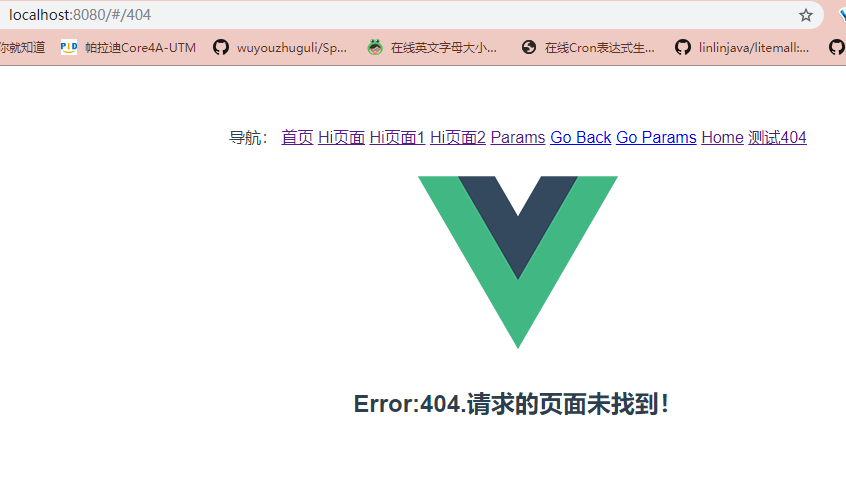

在学习过渡效果的时候，我们学了mode的设置，但是在路由的属性中还有一个mode。
这节课我们就学习一下另一个mode模式和404页面的设置。
mode的两个值
- histroy: 当你使用 history 模式时，URL 就像正常的 url，例如 http://jsapng.com/lms/，也好看！
- hash: 默认’hash’值，但是hash看起来就像无意义的字符排列，不太好看也不符合我们一般的网址浏览习惯。
404页面的设置
用户会经常输错页面，当用户输错页面时，我们希望给他一个友好的提示，为此美工都会设计一个漂亮的页面，
这个页面就是我们常说的404页面。vue-router也为我们提供了这样的机制.
- 设置我们的路由配置文件（/src/router/index.js）：
{
path:'*',
component:Error
}
这里的path:’*’就是找不到页面时的配置，component是我们新建的一个Error.vue的文件。
- 新建404页面：在/src/components/文件夹下新建一个Error.vue的文件。简单输入一些有关错误页面的内容。
- 我们在用 router-link 随便写一个标签的路径。
{{message}}
点击测试404，预览一下我们现在的页面，就已经实现404页面的效果。
